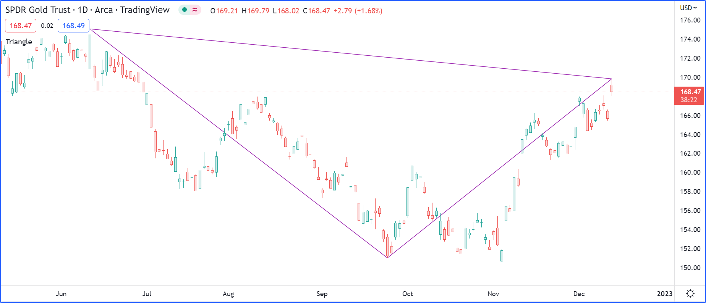

Script structure¶
A Pine script follows this general structure:
<version>
<declaration_statement>
<code>
Version¶
A compiler annotation in the following form tells the compiler which of the versions of Pine Script® the script is written in:
//@version=5
- The version number can be 1 to 5.
- The compiler annotation is not mandatory. When omitted, version 1 is assumed. It is strongly recommended to always use the latest version of the language.
- While it is synctactically correct to place the version compiler annotation anywhere in the script, it is much more useful to readers when it appears at the top of the script.
Notable changes to the current version of Pine Script® are documented in the Release notes.
Declaration statement¶
All Pine scripts must contain one declaration statement, which is a call to one of these functions:
The declaration statement:
- Identifies the type of the script, which in turn dictates which content is allowed in it, and how it can be used and executed.
- Sets key properties of the script such as its name, where it will appear when it is added to a chart, the precision and format of the values it displays, and certain values that govern its runtime behavior, such as the maximum number of drawing objects it will display on the chart. With strategies, the properties include parameters that control backtesting, such as initial capital, commission, slippage, etc.
Each type of script has distinct requirements:
- Indicators must contain at least one function call which produces output on the chart (e.g., plot(), plotshape(), barcolor(), line.new(), etc.).
- Strategies must contain at least one
strategy.*()call, e.g., strategy.entry(). - Libraries must contain at least one exported function or user-defined type.
Code¶
Lines in a script that are not comments or compiler annotations are statements, which implement the script’s algorithm. A statement can be one of these:
- variable declaration
- variable reassignement
- function declaration
- built-in function call, user-defined function call or a library function call
- if, for, while, switch or type structure.
Statements can be arranged in multiple ways:
- Some statements can be expressed in one line, like most variable declarations, lines containing only a function call or single-line function declarations. Lines can also be wrapped (continued on multiple lines). Multiple one-line statements can be concatenated on a single line by using the comma as a separator.
- Others statements such as structures or multi-line function declarations always require multiple lines because they require a local block. A local block must be indented by a tab or four spaces. Each local block defines a distinct local scope.
- Statements in the global scope of the script (i.e., which are not part of local blocks) cannot begin with white space (a space or a tab). Their first character must also be the line’s first character. Lines beginning in a line’s first position become by definition part of the script’s global scope.
A simple valid Pine Script® v5 indicator can be generated in the Pine Script® Editor by using the “Open” button and choosing “New blank indicator”:
//@version=5
indicator("My Script")
plot(close)
This indicator includes three local blocks, one in the f() function declaration,
and two in the variable declaration using an if structure:
//@version=5
indicator("", "", true) // Declaration statement (global scope)
barIsUp() => // Function declaration (global scope)
close > open // Local block (local scope)
plotColor = if barIsUp() // Variable declaration (global scope)
color.green // Local block (local scope)
else
color.red // Local block (local scope)
bgcolor(color.new(plotColor, 70)) // Call to a built-in function (global scope)
You can bring up a simple Pine Script® v5 strategy by selecting “New blank strategy” instead:
//@version=5
strategy("My Strategy", overlay=true, margin_long=100, margin_short=100)
longCondition = ta.crossover(ta.sma(close, 14), ta.sma(close, 28))
if (longCondition)
strategy.entry("My Long Entry Id", strategy.long)
shortCondition = ta.crossunder(ta.sma(close, 14), ta.sma(close, 28))
if (shortCondition)
strategy.entry("My Short Entry Id", strategy.short)
Comments¶
Double slashes (//) define comments in Pine Script®. Comments can begin anywhere on the line.
They can also follow Pine Script® code on the same line:
//@version=5
indicator("")
// This line is a comment
a = close // This is also a comment
plot(a)
The Pine Script® Editor has a keyboard shortcut to comment/uncomment lines: ctrl + /. You can use it on multiple lines by highlighting them first.
Line wrapping¶
Long lines can be split on multiple lines, or “wrapped”. Wrapped lines must be indented with any number of spaces, provided it’s not a multiple of four (those boundaries are used to indent local blocks):
a = open + high + low + close
may be wrapped as:
a = open +
high +
low +
close
A long plot() call may be wrapped as:
plot(ta.correlation(src, ovr, length),
color = color.new(color.purple, 40),
style = plot.style_area,
trackprice = true)
Statements inside user-defined function declarations can also be wrapped. However, since a local block must syntactically begin with an indentation (4 spaces or 1 tab), when splitting it onto the following line, the continuation of the statement must start with more than one indentation (not equal to a multiple of four spaces). For example:
updown(s) =>
isEqual = s == s[1]
isGrowing = s > s[1]
ud = isEqual ?
0 :
isGrowing ?
(nz(ud[1]) <= 0 ?
1 :
nz(ud[1])+1) :
(nz(ud[1]) >= 0 ?
-1 :
nz(ud[1])-1)
You can use comments in wrapped lines:
//@version=5
indicator("")
c = open > close ? color.red :
high > high[1] ? color.lime : // A comment
low < low[1] ? color.blue : color.black
bgcolor(c)
Compiler annotations¶
Compiler annotations are comments that issue special instructions for a script:
//@version=specifies the PineScript™ version that the compiler will use. The number in this annotation should not be confused with the script’s revision number, which updates on every saved change to the code.//@descriptionsets a custom description for scripts that use the library() declaration statement.//@function,//@paramand//@returnsadd custom descriptions for a user-defined function, its parameters, and its result when placed above the function declaration.//@typeand//@fieldadd custom descriptions for a user-defined type (UDT) and its fields when placed above the type declaration.//@variableadds a custom description for a variable when placed above its declaration.//@strategy_alert_messageprovides a default message for strategy scripts to pre-fill the “Message” field in the alert creation dialogue.//#regionand//#endregioncreate collapsible code regions in the Pine Editor. Clicking the dropdown arrow next to//#regioncollapses the lines of code between the two annotations.
This script draws a rectangle using three interactively selected points on the chart. It illustrates how compiler annotations can be used:
//@version=5
indicator("Triangle", "", true)
int TIME_DEFAULT = 0
float PRICE_DEFAULT = 0.0
x1Input = input.time(TIME_DEFAULT, "Point 1", inline = "1", confirm = true)
y1Input = input.price(PRICE_DEFAULT, "", inline = "1", tooltip = "Pick point 1", confirm = true)
x2Input = input.time(TIME_DEFAULT, "Point 2", inline = "2", confirm = true)
y2Input = input.price(PRICE_DEFAULT, "", inline = "2", tooltip = "Pick point 2", confirm = true)
x3Input = input.time(TIME_DEFAULT, "Point 3", inline = "3", confirm = true)
y3Input = input.price(PRICE_DEFAULT, "", inline = "3", tooltip = "Pick point 3", confirm = true)
// @type Used to represent the coordinates and color to draw a triangle.
// @field time1 Time of first point.
// @field time2 Time of second point.
// @field time3 Time of third point.
// @field price1 Price of first point.
// @field price2 Price of second point.
// @field price3 Price of third point.
// @field lineColor Color to be used to draw the triangle lines.
type Triangle
int time1
int time2
int time3
float price1
float price2
float price3
color lineColor
//@function Draws a triangle using the coordinates of the `t` object.
//@param t (Triangle) Object representing the triangle to be drawn.
//@returns The ID of the last line drawn.
drawTriangle(Triangle t) =>
line.new(t.time1, t.price1, t.time2, t.price2, xloc = xloc.bar_time, color = t.lineColor)
line.new(t.time2, t.price2, t.time3, t.price3, xloc = xloc.bar_time, color = t.lineColor)
line.new(t.time1, t.price1, t.time3, t.price3, xloc = xloc.bar_time, color = t.lineColor)
// Draw the triangle only once on the last historical bar.
if barstate.islastconfirmedhistory
//@variable Used to hold the Triangle object to be drawn.
Triangle triangle = Triangle.new()
triangle.time1 := x1Input
triangle.time2 := x2Input
triangle.time3 := x3Input
triangle.price1 := y1Input
triangle.price2 := y2Input
triangle.price3 := y3Input
triangle.lineColor := color.purple
drawTriangle(triangle)